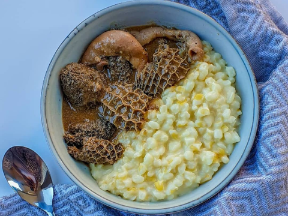

Mogodu and Samp

Mogodu is a South African food. Mogodu is a combination of chopped tripe and intestines serves as a stew often with samp or pap
Ingredients
- 1 kg tripe coarse salt, for sprinkling and soaking
- 4 litres of water salt and pepper, to taste
- 4 teaspoon of ghee or vegetable oil
- 1 medium onion, roughly chopped
- 1 large red chilli, finely chopped
- 1 teaspoon of garlic, crushed
- 2 teaspoon of garam masala
- 1 teaspoon of paprika
- 2 bay leaves
- 1 x 400 g can of chopped tomatoes
- 1 cup amasi or plain yoghurt, for serving
- 2 teaspoon of parsley, chopped, to garnish
Instructions
- Place the tripe in a large bowl
- Sprinkle coarse salt all over the tripe and add half the water
- Soak for about an hour, then rinse thoroughly under cold, running water
- Cut the tripe into bite-sized pieces and place in a large saucepan with a lid. Season with salt and pepper and add the remaining water
- Slowly bring it to a boil over a low heat and cook for 3 hours or until tender. Drain and set aside
- Heat the ghee or oil in a large pan or skillet
- Stir in the onion, chilli and garlic
- Add the masala, paprika and bay leaves. Season with salt and pepper, and stir through while cooking over low heat until the onion is cooker
- Add tomatoes, stir through, and cook for 2 minutes
- Add the amasi or yoghurt and stir through. The sauce should be thick by now, if not, cook over low heat until reduced
- Add the tripe and cook for about 10 minutes in the sauce
Return Page